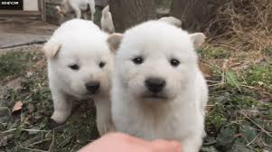
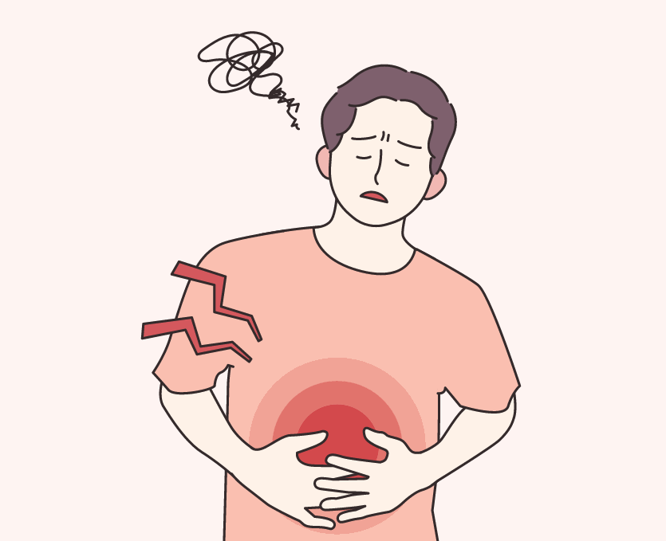

자기 소개


이 페이지는 나의 개인적인 것을 소개합니다.
차두한
- 동물 애호가: 강아지, 고양이, 파충류를 막론하고 동물들을 좋아합니다. 단 비둘기 제외
- 과민성대장염: 긴장을 하거나 멀리 갈 상황이 발생할 시 매우 안타까운 일이 발생합니다.
- 도파민 중독자: 릴스와 숏츠를 굉장히 자주 봄으로써 도파민에 매우 절여져있습니다.
이 페이지는 나의 개인적인 것을 소개합니다.